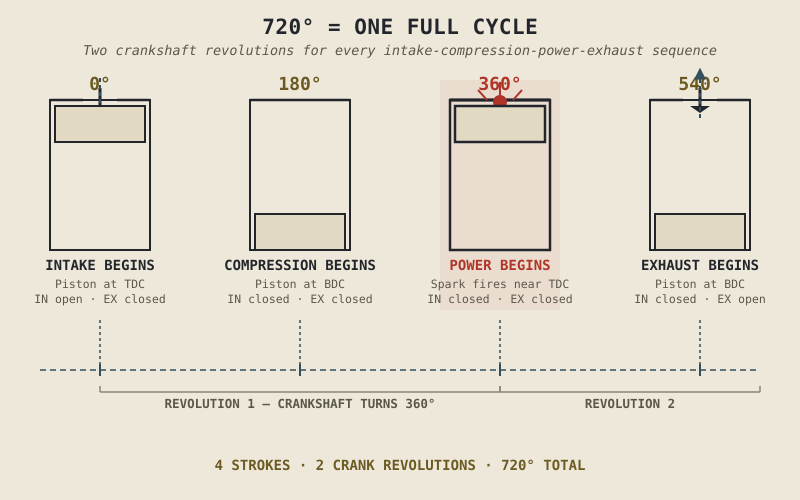

An engine spinning at 9,000rpm is turning its crankshaft 150 times every second. It's tempting to assume that means each cylinder is also completing its full combustion cycle 150 times a second. It isn't. Every cylinder in a conventional four-stroke engine needs two full crankshaft rotations — not one — to complete a single cycle of intake, compression, power, and exhaust. Half of what looks like blistering speed on a tachometer is actually the engine patiently working through the other three-quarters of a job Chapter 2.1 already told you isn't about power delivery at all.
That chapter previewed the four-stroke cycle in outline. This one walks through it properly, stroke by stroke, because the exact choreography here — not just that these four things happen, but the order, the timing, and the small overlaps between them — is the mechanical foundation that Chapters 2.3 through 2.9 will each build on in turn.
Two Rotations, Four Strokes
Before the individual strokes, two pieces of vocabulary make the rest of this chapter far easier to follow. A piston's highest point in the cylinder is called top dead centre, or TDC. Its lowest point is bottom dead centre, or BDC. Every stroke is simply the piston travelling from one of these points to the other, and a "stroke" and a "180 degrees of crankshaft rotation" are the same thing, because the crankshaft makes exactly half a turn for every full piston movement from TDC to BDC or back.
Four strokes, each one 180 degrees of crank rotation, adds up to 720 degrees — two complete crankshaft revolutions — to finish one cycle in a single cylinder. This is why an engine's RPM figure doesn't directly tell you how many full combustion cycles per second each cylinder is completing; it tells you how many half-cycles, since each crank revolution only advances the piston through one stroke, not one full cycle.
Stroke One — Intake
The cycle begins with the piston at TDC and the intake valve open. As the piston travels down toward BDC, it enlarges the volume inside the cylinder, and that expanding volume creates lower pressure than the intake tract outside it. Air, along with fuel introduced either by a carburetor or fuel injection (Chapter 2.13 covers both), gets drawn in through the open intake valve to fill that low-pressure space. By the time the piston reaches BDC, the cylinder is as full as it's going to get, the intake valve closes, and the first stroke is done.
Nothing about this stroke produces power. Its entire job is loading the cylinder with the raw material — air and fuel — that the rest of the cycle is going to use.
Stroke Two — Compression
With both valves now closed, the piston reverses direction and travels back up from BDC toward TDC, squeezing the air-fuel mixture it just drew in into a much smaller volume. This is where the compression ratio introduced back in Chapter 1.5 actually happens mechanically — the ratio is simply a measure of how much smaller that final, squeezed volume is compared to the cylinder's full volume at BDC. Squeezing the mixture raises both its pressure and its temperature, and that matters directly for the next stroke: a compressed, heated mixture burns faster and releases its energy more completely than the same mixture would if it ignited at low pressure. Chapter 2.9 goes deep on exactly how much compression is desirable, and why more isn't simply always better.
By the time the piston nears TDC again, the mixture is tightly compressed and ready, and the cycle is one stroke away from doing the job Chapter 2.1 said an engine exists to do.
Stroke Three — Power
Just before the piston reaches TDC, a spark plug ignites the compressed mixture — the exact timing of that spark, and why it's fired slightly early rather than precisely at TDC, is a full topic on its own in Chapter 2.4. Combustion releases its energy rapidly as expanding, high-pressure gas, and with both valves still closed, that expanding gas has nowhere to go except to push the piston back down toward BDC.
This is the one stroke, out of four, that actually delivers the mechanical push Chapter 2.1 described as the engine's entire reason for existing. Everything in the previous two strokes existed to set this moment up; everything in the stroke that follows exists to clean up after it.
Three strokes of preparation and cleanup surround a single stroke of actual output. The power stroke isn't one part of an evenly divided cycle — it's the whole point, and the other three strokes are its supporting cast.
Stroke Four — Exhaust
As the piston reaches BDC after the power stroke, the exhaust valve opens. The piston travels back up toward TDC one final time, and rather than compressing anything, this upward motion simply pushes the now-spent combustion gases out through the open exhaust valve and into the exhaust system — the subject of Chapter 2.14. As the piston reaches TDC, the exhaust valve closes, the intake valve opens again, and the entire four-stroke sequence restarts from the beginning.

The piston at four positions around the cycle — intake, compression, power, exhaust — with valve states and crankshaft angle marked at each stage, showing the full 720-degree, two-revolution cycle.
Valve Timing Makes This Choreography Possible
This chapter has described intake, compression, power, and exhaust as four clean, separate blocks, and that's the right mental model to start with. In a real engine, the valves don't snap open and shut exactly at TDC and BDC — they're timed by the camshaft to open slightly before and close slightly after those points, and at high RPM, the intake valve can even open briefly before the exhaust valve has fully closed, a deliberate overlap that uses the outgoing exhaust flow to help draw in the next intake charge. Chapter 2.7 covers camshaft design and valve timing in full, including why that overlap is tuned differently for an engine built for low-end torque versus one built to rev freely toward a high redline.
None of that complexity changes the basic four-stroke sequence this chapter just walked through. It just means the clean boundaries between strokes are, in a running engine, closer to a well-rehearsed handoff than an abrupt stop and start.
A Common Misconception, Cleared Up Early
It's easy to assume, once you know an engine has four strokes, that all four are roughly equal in importance, the way four steps in a recipe usually are. They aren't. Intake and exhaust exist purely to move mass in and out of the cylinder. Compression exists purely to set up favourable conditions for combustion. Only the power stroke converts anything into the rotational motion Chapter 2.1 named as the engine's actual job. The other three strokes are indispensable, but they're indispensable in the way a runway is indispensable to a plane taking off — necessary infrastructure, not the flight itself.
Where This Leads
This chapter treated the intake and exhaust strokes as simple, uneventful stages of moving mass in and out of the cylinder. They're not quite that simple in practice — how air and fuel actually get into the cylinder, and how completely fuel actually burns during the power stroke, both involve real engineering problems worth their own chapters. Chapter 2.3 picks up the intake stroke properly, and Chapter 2.4 does the same for the ignition and combustion event this chapter only sketched as "a spark ignites the mixture."
Key Concepts to Remember
- A complete four-stroke cycle takes two full crankshaft revolutions — 720 degrees — not one, because each of the four strokes is 180 degrees of crank rotation.
- Intake draws the air-fuel mixture in as the piston descends; compression squeezes it as the piston rises; power ignites it and delivers the piston's one useful push; exhaust clears the spent gas as the piston rises again.
- Compression ratio, introduced in Chapter 1.5, is a direct measure of how much the compression stroke shrinks the mixture's volume — and that squeezing is what makes the following power stroke effective.
- Only the power stroke actually delivers rotational output; intake, compression, and exhaust are necessary infrastructure around that one moment, not equal partners to it.
- Real valve timing overlaps slightly at the edges of each stroke rather than switching instantly at TDC and BDC — a refinement Chapter 2.7 covers in full.
Cross-References
| ← Ch. 2.1 | Previewed this cycle in outline and established that only one of four strokes delivers power; this chapter supplies the full mechanical detail behind that claim. |
| ← Ch. 1.5 | Introduced compression ratio as vocabulary; this chapter shows exactly where in the cycle that ratio is produced. |
| → Ch. 2.3 | Picks up the intake stroke in full engineering detail. |
| → Ch. 2.4 | Covers the ignition and combustion event in full engineering detail. |
| → Ch. 2.7 / 2.9 | Cover camshaft valve timing and compression ratio trade-offs in depth, both building directly on this chapter. |